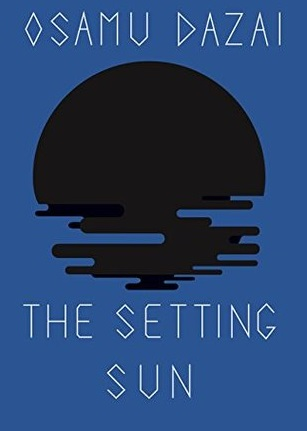
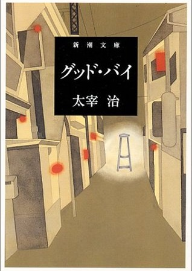

The Setting Sun
(1947)
(1947)

Good-bye
(1948)
(1948)
As he would have been first to admit, by ordinary standards Osamu Dazai (1909–1948) was not what most of us would call a “decent” man. In the words of poet and critic Kenneth Rexroth, his was an “extremely disorganized” life. Though for sure the adjective applies, Rexroth might as accurately have said “supremely” or even “magnificently,” for Dazai’s life was nothing less than a monument of disorganization, a litany of self-inflicted wounds and disasters culminating in not only his own but two other suicides.
Born Shūji Tsushima (he acquired his pseudonym in 1933) to an upper-class Japanese family, from an early age Dazai demonstrated a precocious talent for writing. He was a diligent student and seemed bound for success. Things took a turn for the worse, however, starting in 1927 when his literary hero, Ryunosuke Akutagawa, committed suicide. He started neglecting his studies. Before long the pattern of Dazai’s life was established, with him failing at school, squandering his allowance on alcohol and prostitutes, dabbling in Marxism, and courting—symbiotically—women and suicide.
Dazai hails from an aristocratic family in the Kanagi region of Japan, the Tsushima clan. His birth name was Shuji Tsushima before he took on Osamu Dazai as his pen name. He was born on the 19th of June 1909 to a life of privilege, in a big mansion filled with servants. Their luxuries can be attributed to the great political influence that was received by his father, Tushima Gen’emon.
The Tsushima family was rather big, with eleven children born under Gen’emon and Tane Tsushima. However, after the birth of the eleventh child, Tane’s health deteriorated rapidly. With his father busy, and his mother sick most of the time, Shuji was always in the company of their family’s maids and workers who were responsible for bringing him up.
At his pre-adolescent years, Shuji already showed a lot of potential with his writing. He participated in literary magazines, wrote self-published poems, and even wrote on the newspaper at Hirosaki University. Interesting enough, Shuji was not majoring on anything related to literary, instead, he was majoring in theatre - gidayu in particular. Gidayu is a form of puppet theatre which stems from the Edo period. This unconventional choice for a college degree comes from his fascination with Edo culture, and anything related to ancient Japan.
He took up the pen name “Osamu Dazai” which was the name he used to publish Ressha in 1933. This particular work was pivotal for the new Osamu, as it was with this work where he was able to find his voice. The writing style used in Ressha became his signature writing style for the succeeding novels - it was an autobiography that was written in a first-person perspective.
Unrelated to his thing for suicide attempts, Osamu’s health deteriorated later. It was found that he had acute appendicitis which required him to be on medication. One of the painkillers he was taking, Pabinal, proved to be highly addictive to Osamu. The next year, Osamu’s addiction to Pabinal took a toll on his life. He battled the addiction, but unfortunately lost most of the time. This prompted the people around Osamu to have him locked in a mental institution which would help him deal with this problem.
During his time at the mental institution, Hatsuyo became unfaithful and ended up cheating on Osamu with his closest friend, Zenshiro Kodate. Upon finding out about the affair, Osamu confronted his wife and the two attempted to commit suicide together. The pair attempted to overdose on sleeping pills, but both were unsuccessful at the attempt. Afterwards, they proceeded with the paperwork to formally dissolve their marriage.
After having a daughter out of wedlock, Osamu’s life began spiraling into turmoil once again. His mental health declined, causing him to become an alcoholic. Having been diagnosed with tuberculosis before the war, his health was not improving either. In the end, he ended up abandoning his second wife as well as his mistress. His next relationship would end up to be his last.
The last lady in Osamu Dazai’s life is Tome Yamazaki, who worked as a beautician in a salon. The two developed a relationship and started living together. During their time together, Osamu wrote his most popular novel of all-time - Ningen Shikkaku or No Longer Human. He was able to successfully finish the novel before successfully committing suicide one last time with Tomie. The two drowned themselves in a nearby river from their home.
Modal Image Gallery (click on the pictures for more information):
His popularity transcended to modern day pop culture, so it comes to no surprise that a popular manga/anime series has a character inspired by him. The character Osamu Dazai from Bungo Stray Dogs acts as the secondary protagonist after Atsushi Nakajima and is a member of the Armed Detective Agency. Cheerful and a quick-thinker, Dazai also has quite the dark past that is revealed throughout the series. He is one of the many characters shrouded in mystery in the beginning, and he's perhaps the hardest one to figure out. It is also noteworthy that his character is based on the real Osamu Dazai, and that their personalities are somewhat similar... with both of them having a thing for women and (double) suicide and whatnot.
Performance Assessment #2
Posted on January 19, 2021.